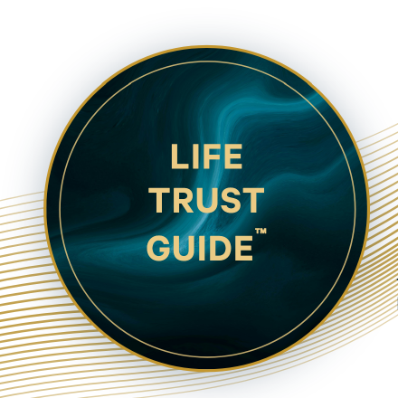

September 2025 – Juli 2026 · Baden-Baden
Life Trust Guide™ Gold
Die vollständige Journey Gold der Life Trust Guide Ausbildung von homodea. Mehrtägige Seminare in Präsenz und live, begleitete Integrationsphasen, kontinuierliche Praxisarbeit in festen Lerngruppen und eigenständige Praxisprojekte über den gesamten Ausbildungszeitraum.

Human Evolution ca. 124 Std.
Das Modul vermittelt systemisches Coaching und die Begleitung von Transformationsprozessen auf Grundlage integraler und entwicklungspsychologischer Modelle, unter anderem nach Ken Wilber, Clare Graves und Robert Kegan. Als konzeptioneller Bezugsrahmen dient darüber hinaus die Theory U nach Otto Scharmer. Hinzu kommen Erkenntnisse der Neurowissenschaft und der Flowforschung zu Selbstregulation, Lernen und Leistungsfähigkeit. Im Zentrum steht ein siebendimensionaler Entwicklungsprozess.
Auf der persönlichen Ebene: reflexive Selbststeuerung und Entwicklungsfähigkeit, die Arbeit mit unbewussten Mustern und Selbstsabotage, die neurowissenschaftlichen Grundlagen von Selbstregulation und Lernen, das Verständnis der Flowforschung und die bewusste Förderung von Flowzuständen, Präsenz und Achtsamkeit im Arbeitskontext sowie der bewusste Umgang mit Unsicherheit, Nichtwissen und Ambiguität.
Im Bereich Coaching und Prozessbegleitung: systemisches Coaching, die Begleitung von Veränderungsprozessen anhand strukturierter Phasenmodelle, entwicklungsorientiertes Coaching mit Blick auf unterschiedliche Reifungsstufen, Schattenintegration sowie die Analyse und Auflösung innerer und äußerer Konflikte und die Moderation von Prozessen in Gruppen und Teams.
Im systemischen und organisationalen Bereich: systemisches Denken und Systemdiagnose, das Entscheiden und Handeln in komplexen Kontexten, integrale Analyse und Mehrperspektivität, Co-Creation und die Aktivierung kollektiver Intelligenz sowie Resonanzfähigkeit als Grundlage von Arbeit an Beziehung und Kultur.
Stark im Sturm ca. 90 Std.
Das Modul vermittelt Resilienz, Krisenkompetenz und Transformationspsychologie auf Grundlage aktueller neurowissenschaftlicher und stressphysiologischer Erkenntnisse. Zu den Bezugsrahmen gehören unter anderem die Polyvagaltheorie (Stephen Porges), das Window of Tolerance (Daniel Siegel), die Salutogenese (Aaron Antonovsky), die Resonanztheorie (Hartmut Rosa), das Konzept der Antifragilität (Nassim Taleb) und die Logotherapie (Viktor Frankl). Im Zentrum steht die Fähigkeit, unter Belastung handlungsfähig, beziehungsfähig und wahrnehmungsfähig zu bleiben.
Im Bereich persönlicher Resilienz und Selbstregulation: Resilienz als trainierbarer Prozess aus Regulation, Beziehung und Sinn, nervensystembasierte Selbstregulation und ein fundiertes Verständnis der eigenen Stressphysiologie, Emotionsregulation im Umgang mit intensiven Gefühlen, psychologische Flexibilität und Adaptivität, eine sinnorientierte und werteorientierte Haltung als Stresspuffer sowie der Aufbau nachhaltiger Routinen für Selbstfürsorge und Selbstregulation.
Im Bereich Begleitung und Koregulation: Koregulation und Zustandsführung, traumasensibles Arbeiten verbunden mit einer klaren Klarheit in Rolle und Grenze, das dosierte und ressourcenorientierte Halten belastender und kollektiver Emotionen, die Begleitung von Menschen in Krisen und Übergängen sowie Beziehungsfähigkeit und Resonanzfähigkeit als zentraler Resilienzfaktor.
Im Bereich Führung und Handeln unter Unsicherheit: das Entscheiden und Handeln in volatilen und unsicheren Kontexten, Antifragilität als Wachstum durch dosierte Herausforderung, Krisenkompetenz und ein transformationspsychologisches Verständnis von Übergängen, posttraumatisches Wachstum und Integration nach Belastung sowie Verbundenheit und Gemeinschaft als Resilienzressource in Teams und Organisationen.
Resonanz, das Marketing der Zukunft ca. 72 Std.
Das Modul vermittelt eine beziehungsorientierte und vertrauensorientierte Marketingkompetenz auf Grundlage soziologischer, kommunikationswissenschaftlicher, wirtschaftsethischer und motivationspsychologischer Erkenntnisse. Zu den Bezugsrahmen gehören unter anderem die Resonanztheorie (Hartmut Rosa), die dialogische Philosophie des Ich und Du (Martin Buber), die Anthropologie der Gabe (Marcel Mauss), die Theory U (Otto Scharmer) und die Selbstbestimmungstheorie (Edward Deci und Richard Ryan). Im Zentrum steht Kommunikation als wechselseitig verändernde Beziehung.
Im Bereich Identität, Positionierung und Kommunikationsgrundlage: die Klärung der eigenen Werte und Identität als Grundlage einer stimmigen Positionierung, die Entwicklung einer unverwechselbaren und authentischen Identität in Kommunikation und Marke, die wertebasierte Bestimmung der eigenen Zielgruppe jenseits reiner Logik von Segmenten und Personas sowie ein reflektierter Umgang mit den eigenen Hemmnissen gegenüber Sichtbarkeit und Selbstdarstellung.
Im Bereich beziehungsorientierter und dialogischer Kommunikation: der Aufbau tragfähiger Kundenbeziehungen über die reine Transaktion hinaus, dialogische Gesprächsführung und qualitative Kompetenz im Tiefeninterview, eine einladende statt manipulative Kundenansprache als ethische Haltung in Kommunikation und Vertrieb, vertrauensbildende Kommunikation als Grundlage von Kundenbindung, die Gestaltung und Pflege von Räumen für Community und Beziehung sowie die gemeinsame und partizipative Entwicklung von Angeboten gemeinsam mit der Zielgruppe.
Im Bereich strategischer und handwerklicher Marketingkompetenz: die Entwicklung einer konsistenten und langfristig angelegten Kommunikationsstrategie, der Aufbau und die Priorisierung eigener Kanäle mit Schwerpunkt auf Kanälen wie Newsletter und Community, das Verfassen wirkungsvoller und glaubwürdiger Kommunikationsstücke in der Entwicklung von Content und Botschaften sowie die kritische Analyse des Paradigmenwandels im Marketing und der Grenzen der Aufmerksamkeitsökonomie.
Transaktionsanalyse in Aktion ca. 34 Std.
Das aufgezeichnete Modul mit Andrea Landschof behandelt die Grundlagen der Transaktionsanalyse und ihre Anwendung in Kommunikation, Gesprächsführung, Konfliktlösung und Beziehungsgestaltung. Es umfasst zwei Modulblöcke mit Lektionen, Fragerunden, Wochenimpulsen und Praxisübungen.
Behandelte Themen: die Grundlagen und zentralen Modelle der Transaktionsanalyse, Kommunikation und Gesprächsführung, das Erkennen von Kommunikationsmustern, Konfliktlösung und Beziehungsdynamik sowie Selbstreflexion und Selbstwahrnehmung.
Praktische Anwendung: das Erkennen und Verändern eigener Kommunikationsmuster in Gesprächen, die Analyse von Beziehungsdynamiken sowie die Übertragung des Gelernten auf berufliche und persönliche Situationen in Übungen und in der Arbeit an konkreten Fallbeispielen.
Spirit IQ ca. 114 Std.
Das Modul vermittelt eine säkulare, postreligiöse Praxis der Achtsamkeit, Selbstwahrnehmung und inneren Reifung auf Grundlage der integralen Theorie (Ken Wilber), der modernen Achtsamkeitsforschung und Kontemplationsforschung (unter anderem der achtsamkeitsbasierten Stressreduktion nach Jon Kabat-Zinn), des säkularen Buddhismus (Stephen Batchelor), der Polyvagaltheorie (Stephen Porges) und der Forschung zu Selbstmitgefühl. Im Zentrum stehen innere Klarheit, emotionale Reife und eine stabile Präsenz.
Im Bereich Achtsamkeit, Präsenz und Selbstregulation: Achtsamkeit als trainierbare, körperbasierte Fähigkeit der Selbstwahrnehmung, gesammelte Aufmerksamkeit und Präsenz auch bei hoher Reizdichte, emotionale und nervensystembasierte Selbstregulation sowie innere Ruhe und Gelassenheit unter Belastung.
Im Bereich Selbstwahrnehmung, Reflexion und Klarheit: die Fähigkeit, eigene Gedankenmuster und Reaktionsmuster zu beobachten, statt sich mit ihnen zu identifizieren, Unterscheidungsvermögen und Klarheit im Wahrnehmen und Urteilen, radikale Selbstehrlichkeit und das Erkennen eigener Selbsttäuschung, emotionale Reife im Umgang mit intensiven und existenziellen Erfahrungen sowie ein gelassenerer Umgang mit Stress durch reduzierte Reaktivität und die Fähigkeit loszulassen.
Im Bereich Integrität, Mitgefühl und sinnorientiertes Wirken: Integrität als Kohärenz von Werten und Handeln, eine wahrhaftige und verbindende Kommunikation, Empathie, Mitgefühl und emotionale Ausgeglichenheit im Umgang mit anderen sowie eine sinnorientierte und werteorientierte Ausrichtung des eigenen Wirkens und Beitrags.
Human AI (Foundation & Mastery) ca. 130 Std.
Das Modul vermittelt eine anwendungsorientierte und zugleich ethisch reflektierte Kompetenz im Umgang mit generativer und agentischer Künstlicher Intelligenz. Es verbindet technisches Grundlagenwissen und Anwendungswissen mit einer strukturierten Auseinandersetzung über Verantwortung, Recht und die Auswirkungen von KI auf menschliches Denken und Handeln. Zu den Bezugsrahmen gehören der europäische Rechtsrahmen (EU AI Act) samt deutscher Umsetzung, kognitionswissenschaftliche Befunde zur kognitiven Aktivierung sowie Konzepte der Sicherheitsforschung zu KI wie die Risiken agentischer Systeme, Sykophantie, Anthropomorphisierung und algorithmische Verzerrung.
Die vollständigen Kompetenzfelder und Werkzeuge dieses Moduls sind ausführlich im Inhaltsnachweis Human AI Mastery dokumentiert.
Impact Day ca. 12 Std.
Der Präsenztag im Kongresshaus Baden-Baden dient der Reflexion und Standortbestimmung, der Vernetzung und Zusammenarbeit sowie der Klärung nächster Ziele und der konkreten Umsetzungsplanung.
Behandelte Themen: Reflexion und Standortbestimmung, die Auseinandersetzung mit der eigenen Wirksamkeit, Vernetzung und Zusammenarbeit sowie die Klärung nächster Ziele und die konkrete Umsetzungsplanung.
Praktische Anwendung: die persönliche Standortbestimmung im Kreis der Gemeinschaft, der Austausch und die Vernetzung mit anderen Teilnehmer:innen sowie die Ableitung der nächsten Schritte und deren konkrete Planung für die Umsetzung im Alltag.
Diese Bescheinigung dokumentiert die Teilnahme und die im Rahmen der Ausbildung bearbeiteten Kompetenzfelder. Angegeben ist der reale Lernaufwand inklusive Seminarzeiten, Übungen, Reflexionszeiten und Umsetzungszeiten. Alle Angaben gerundet.